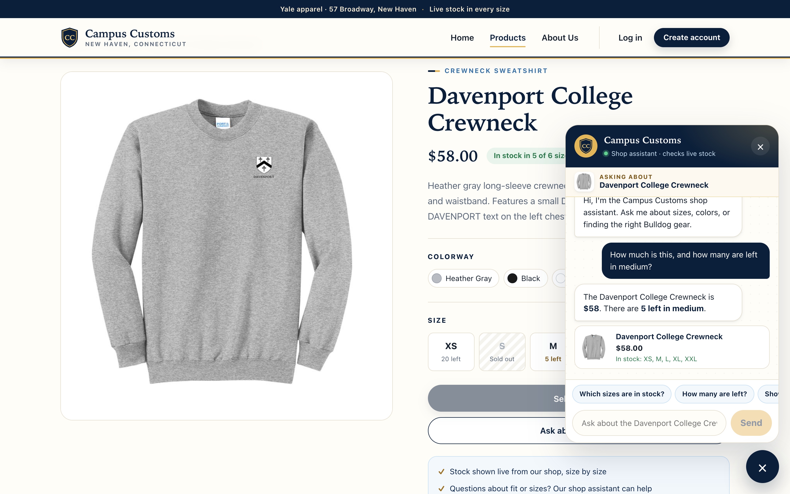
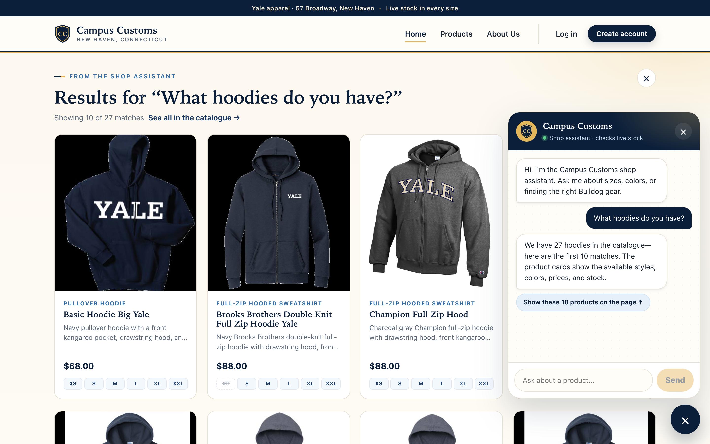
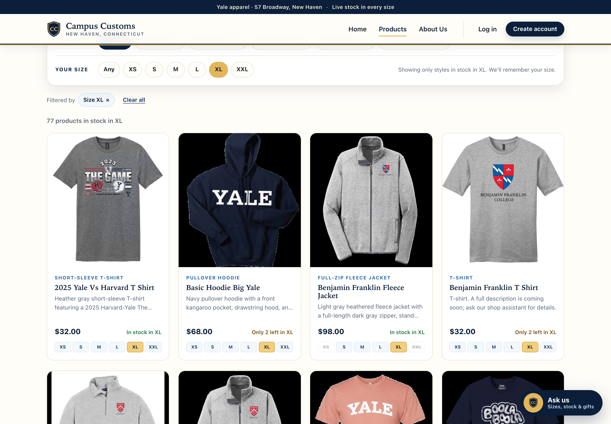

Inventory check through chat
On the Davenport College Crewneck page, the shopper asks “How much is this, and how many are left in medium?” and the assistant replies with the exact price ($58) and stock (5 left in medium). The page itself independently shows the same facts ($58.00 and “M · 5 left” in the size grid, with S sold out), matching the database row (price 58.0, M = 5, S = 0).

app_check_images/inventory.png (click to open full size)Dynamic search-result cards
After the shopper asks “What hoodies do you have?”, a “Results for ‘What hoodies do you have?’” panel appears on the Home page with real hoodie cards (image, name, price, short description, and per-size availability), and the assistant replies that there are 27 hoodies. The panel’s “Showing 10 of 27 matches” and the card prices ($68, $88, $88) match the database.

app_check_images/search_cards.png (click to open full size)Usability improvement: “Shop by your size”
With “Your size: XL” selected on the Products page, the catalogue shows only the 77 products in stock in XL (the database count), with a “Size XL ×” filter chip. Each card highlights XL in its size row and states availability, such as “Only 2 left in XL” for the Basic Hoodie Big Yale (XL = 2 in the database).

app_check_images/size_filter.png (click to open full size)